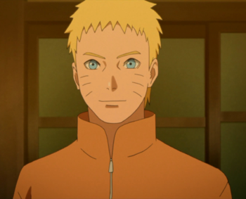
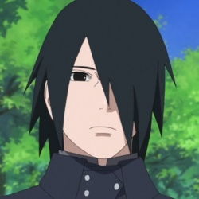

NARUTO UZUMAKI
|  more images |
Naruto Uzumaki is a shinobi of Konohagakure. He became the jinchūriki of the Nine-Tails on the day of his birth — a fate that caused him
to be shunned by most of Konoha throughout his childhood. After joining Team Kakashi, Naruto worked hard to gain the village's acknowledgement
all the while chasing his dream to become Hokage. In the following years, through many hardships and ordeals, he became a capable ninja regarded
as a hero both by the villagers, and soon after, the rest of the world, becoming known as the Hero of the Hidden Leaf. He soon proved to be one
of the main factors in winning the Fourth Shinobi World War, leading him to achieve his dream and become the village's Seventh Hokage. |
SASUKE UCHIHA
|  more images |
Sasuke Uchiha is one of the last surviving members of Konohagakure's Uchiha clan. After his older brother, Itachi, slaughtered their clan,
Sasuke made it his mission in life to avenge them by killing Itachi. He is added to Team 7 upon becoming a ninja and, through competition with
his rival and best friend, Naruto Uzumaki, Sasuke starts developing his skills. Dissatisfied with his progress, he defects from Konoha so that
he can acquire the strength needed to exact his revenge. His years of seeking vengeance and his actions that followed become increasingly
demanding, irrational and isolates him from others, leading him to be branded as an international criminal. After learning the truth of his
brother's sacrifice and later proving instrumental in ending the Fourth Shinobi World War and being happily redeemed by Naruto, Sasuke decides
to return to Konoha and dedicates his life to help protect the village and its inhabitants becoming referred to as the "Supporting Kage" |